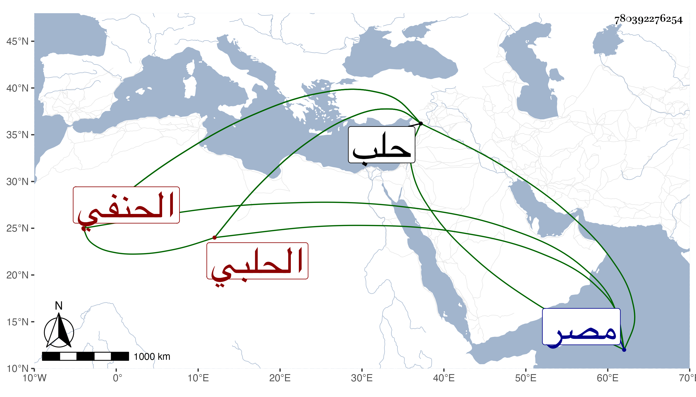

0902Sakhawi.DawLamic.ITO20230111-ara1.EIS1600.780392276254
Biography ID: 780392276254
753
محمد بن محمد بن محمد بن محمد بن محمد بن محمود أثير الدين بن المحب بن الشحنة الحلبي الحنفي والد الذي قبله وولد الآتي بعده وسبط العلاء بن خطيب الناصرية ، أمه خديجة ويعرف كسلفه بابن الشحنة . ولد في ثامن عشرى صفر سنة أربع وعشرين وثمانمائة بحلب ونشأ بها فقرأ القرآن عند محمد الأعزازي وغيره وحفظ العمدة والوقاية والمنار والملحة وعرض بعضها على البرهان الحلبي بل سمع عليه أشياء وكذا قرأ على البدر بن سلامة بعض محفوظاته ، وأخذ عن أبيه وناب عنه في القضاء ببلده من سنة تسع وثلاثين وعن جده لأمه في خطابة الجامع الكبير بها أيضا ثم استقل بالقضاء في عاشر المحرم سنة ست وخمسين إلى أن تركه لولده لسان الدين ثم عاد إليه بعد موته وكذا استقل بالخطابة قبل ذلك بل باشر غيرهما من الوظائف كنظر جيشها وقلعتها ومن التداريس بعضها وقدم الديار المصرية على أبيه غير مرة وحج معه وكثرت مخالطتي له فيها بل وفي بلده وسمعت خطبته بها . وهو حسن الشكالة جيد التصور كثير التودد خير من أخيه عبد البر ولكن ذاك أفضل في الجملة مع سكون هذا وتواضعه وأدبه . مات في جمادى الأولى سنة ثامن وتسعين بحلب .
